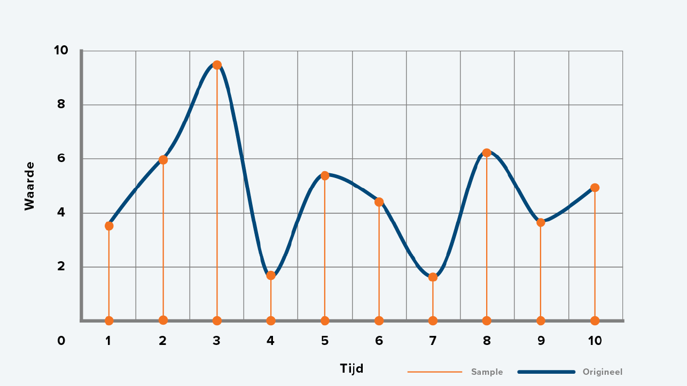
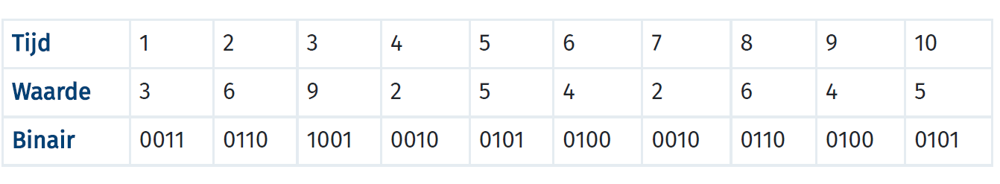

Hoe meer pixels een afbeelding heeft, hoe scherper deze is. Hoe meer pixels, hoe meer opslagruimte de afbeelding inneemt. Een afbeelding die is opgebouwd uit pixels heet een bitmapafbeelding. De twee nadelen van een bitmapafbeelding zijn dat het veel opslagruimte kost en zodra je gaat inzoomen, zullen de pixels zichtbaar worden en de afbeelding zal niet meer scherp zijn.
Om deze nadelen op te lossen is er een oplossing bedacht, namelijk een vectorafbeelding. Dit is een afbeelding waarbij niet de waarde van individuele pixels worden opgeslagen, maar de vormen. Een vectorafbeelding is vooral handig voor enorme plaatjes, zoals een groot reclamebord. Zo'n groot plaatje neemt namelijk heel vele opslagruimte in en moet ook scherp zijn.
Het plaatje hierboven kan als twee manieren worden opgeslagen, namelijk als een bitmap- of vectorafbeelding. Als het een bitmapafbeelding zou zijn, zouden alle waarde van alle pixels worden opgeslagen. Dit zijn 88 pixels. Als dit een vectorafbeelding zou zijn, zouden de volgende dingen opgeslagen worden: vorm, locatie, grootte en kleur. Dit zou dus als 'vierkant 2,2: blauw' worden opgeslagen. Dit neemt veel minder opslagruimte in. Zodra je gaat inzoomen op een vectorafbeelding, zullen er geen pixels zichtbaar zijn. Ook zit er een nadeel aanvast. Je kan namelijk alleen vormen opslaan en geen verschillende kleurtinten.
Een afbeelding bestaat uit prixels, maar een geluid bestaat uit trillingen. Om geluid op te kunnen slaan, moet je dus die trillingen omzetten naar digitale waarden. Hier zit nog één tussenstap tussen, namelijk het omzetten van trillingen naar elektrische signalen. Dit gebeurt door middel van een microfoon. De computer kan dit weer omzetten naar digitale waarden. Dit proces heet samplen. Tijdens dit proces wordt er om de zoveel tijd gemeten wat de sterkte is van het geluid. De grafiek hiervan ziet er als volgt uit:
Alle verschillende waarden kunnen worden omgezet in het binair stelsel. Als je hier vervolgens een tabel van maakt komt die er zo uit te zien:
Deze binaire waarden worden opgeslagen. Zodra het geluid wordt afgespeeld, worden deze waarden weer omgezet naar een elektrisch signaal. De sample rate is het aantal samples per seconde.